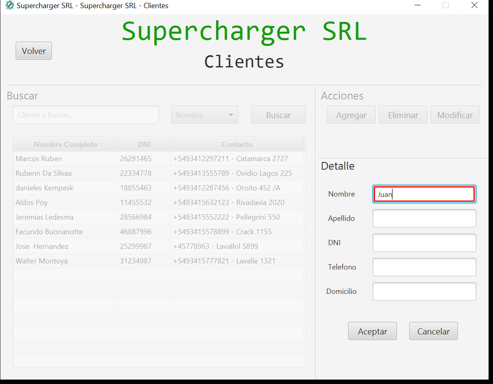

Informe de Pruebas
Paso 0. Antes de comenzar el caso de prueba.
Paso 1. PresionarBoton Clientes.
Paso 2. PresionarBoton Agregar.

Paso 3. EscribirCampoTexto Nombre Juan.

Paso 4. EscribirCampoTexto Apellido Perez.
Paso 5. EscribirCampoTexto DNI 25123456.
Paso 6. EscribirCampoTexto Telefono 3412295217.
Paso 7. EscribirCampoTexto Domicilio "Salta.
Paso 8. PresionarBoton Aceptar.
Paso 9. BuscarTexto 25123456.
Paso 10. PresionarBoton Volver.
Paso N. Despues de finalizar caso de prueba.